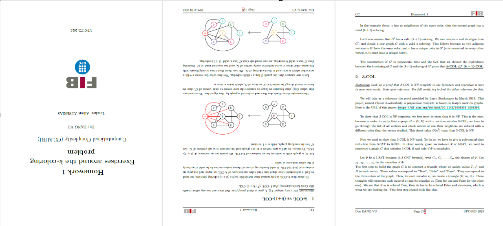
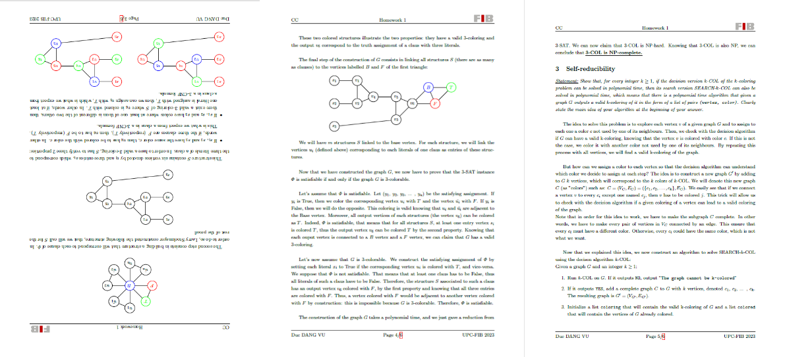
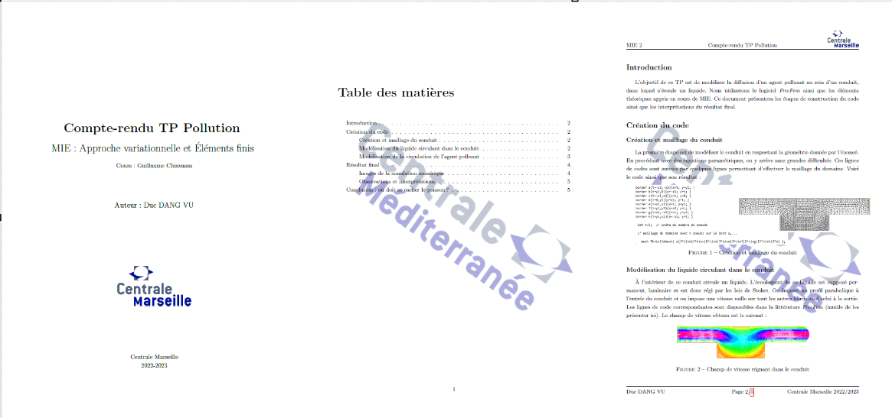
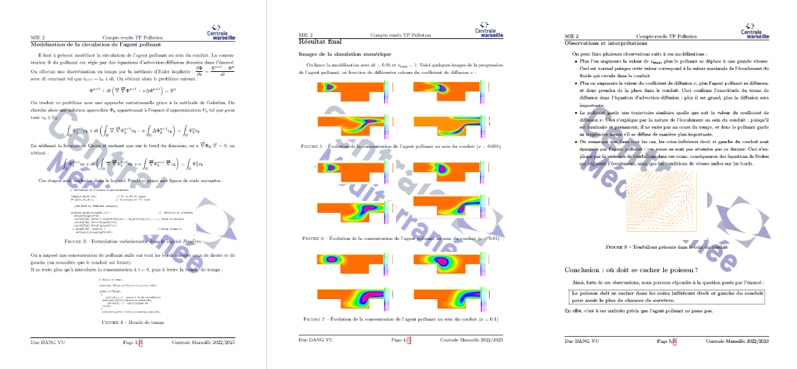
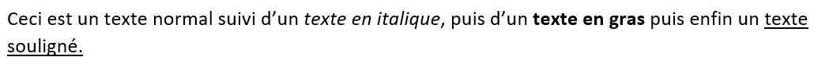
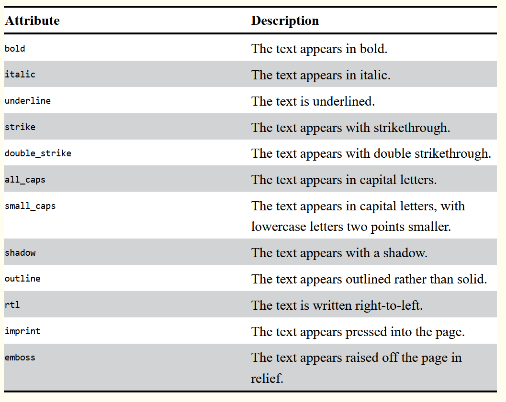

Utilisation de Python pour manipuler des fichiers Word et PDF
- MON
- 2023-2024
- temps 3
- Python
- Word
- PyPDF2
- Python-Docx
- Duc DANG VU
Ce MON expliquera l'utilisation des bibliothèques PyPDF2 et Python-Docx pour manipuler des fichiers Word et PDF.
Prérequis
Connaissance basique de la programmation objet avec Python.
Tout les codes présentés sont disponibles dans mon dossier GitHub de temps 3.1
Introduction
Les formats PDF et Word sont des formats très utilisés. Il peut être intéressant de pouvoir automatiser certaines tâches concernant ces formats, ou bien récupérer les données de ces documents dans des programmes Python. En effet, ces documents ont des encodages plus complexes qu'un simple fichier .txt, ce qui les rend difficile à manipuler sans bibliothèques adéquates. Ce MON présentera comment utiliser les bibliothèques PyPDF2 et Python-Docx pour pouvoir manipuler de tels documents.
Dans la suite, quelques lignes de code en Python seront présentées. Le résultat de l’exécution des lignes de code est indiqué juste après celles-ci, après 3 chevrons >>>
Il faut commencer par installer ces bibliothèques, avec les commandes pip install PyPDF2==1.26.0 et pip install python-docx==0.8.10.
Utilisation de PyPDF2
Présentation des éléments de base du module
Nous allons commencer par présenter les éléments de base de cette bibliothèque. La première classe à connaître est la classe PdfFileReader. Les objets de cette classe permettent d'intégrer dans le code Python un document PDF. Ces objets ont différents attributs, correspondants à différentes caractéristiques du document en question. Elles ont également plusieurs méthodes pour effectuer des opérations sur le document.
Dans la suite de cette section, nous nous appuierons sur deux documents PDF, enregistrés sous les noms de PDF test 1.pdf et PDF test 2.pdf. Ces documents sont des travaux que j'ai effectué lors de ma deuxième année.
Pour ouvrir les documents PDF et les associer à des objets de la classe PdfFileReader, il faut d'abord les ouvrir avec la fonction open, en précisant en argument le paramètre rb, qui permet de lire en binaire le fichier. Ensuite, on créé l'objet en appellant la classe PdfFileReader du module PyPDF2. Une fois que l'on a cet objet, on peut récupérer ses attributs et utiliser les méthodes associées.
pdfFile = open('PDF test 2.pdf', 'rb')
pdfReader = PyPDF2.PdfFileReader(pdfFile)
print(pdfReader.numPages)
>>> 6Dans l'exemple ci-dessus, on ouvre le fichier test numéro 2 et on récupère son nombre de pages.
L'autre classe à connaître est la classe PageObject. Les objets de cette classe représentent les différentes pages du document, ainsi que leurs contenu. On récupère ces objets à partir d'un objet de la classe PdfFileReader grâce à la méthode getPage. En spécifiant le numéro de page que l'on veut récupérer (indexation commençant à 0), on peut récupérer un objet de la classe PageObject. Encore une fois, ces objets ont différents attributs et méthodes pour les manipuler, telle que par exemple la méthode extractText() qui permet d'extraire du texte de la page. Notons également la méthode rotateClockwise, qui prend en argument un des entiers 90, 180 ou 270, et qui permet d'effectuer une rotation de la page.
page = pdfReader.getPage(2)
print(page.extractText())
>>> Compte-renduTPPollution
MIE:Approchevariationnelleet
Elements
Cours:GuillaumeChiavassa
Auteur:DucDANGVU
CentraleMarseille
2022-2023Notons que le texte renvoyé est loin d'être parfait. On remarque que certains élément manquent à l'appel. Cependant, ce texte est globalement conforme à ce qui est présent réellement dans le PDF.
Enfin, la dernière classe importante de ce module est la classe PdfFileWriter. Les objets de cette classe permettent de créer des nouveaux fichiers PDF, à partir des classes précédemment présentées. Les méthodes importantes de cette classe sont les suivantes:
- La méthode addPage, qui permet d'ajouter une page au nouveau fichier PDF en spécifiant en argument un objet de la classe PageObject
- La méthode write, qui prend en argument un fichier écrit en binaire et qui permet de sauvegarder sous format PDF le document associé à l'objet.
- La méthode encrypt permet de protéger le fichier PDF par un mot de passe, renseigné en argument de la méthode.
Utilisation de ces éléments
Pour appliquer ces connaissances, nous allons à présent créer une classe PDF_Tools. Les objets de cette classe pourront effectuer des opérations sur des fichiers PDF grâce à des méthodes qui utiliseront les éléments présentés ci-dessus.
Création de la méthode pour combiner des PDF
Cette méthode permettra de combiner plusieurs documents PDF, c'est-à-dire mettre les pages les une à la suite des autres. Elle prend en argument une liste contenant les noms des PDF à combiner ainsi que le nom du nouveau fichier PDF créé. Pour cela, on doit utiliser un objet de la classe PdfFileWriter, qui va permettre de construire le nouveau fichier PDF. On ajoute ensuite les pages (qui sont en fait des objets de la classe PageObject) une par une grâce à la méthode addPage, puis on sauvegarde le nouveau fichier grâce à la méthode write.
Cliquer pour voir le code de la méthode combine_pdf
Cliquer pour voir le code de la méthode combine_pdf
class PDF_Tools():
def combine_pdf(self, list_pdf: list, name_merged_file: str):
pdf_writer = PyPDF2.PdfFileWriter()
list_pdf_objects = []
for pdf_name in list_pdf:
pdf_file = open(pdf_name, 'rb')
list_pdf_objects.append(PyPDF2.PdfFileReader(pdf_file))
for pdf_object in list_pdf_objects:
for page_num in range(pdf_object.numPages):
page_object = pdf_object.getPage(page_num)
pdf_writer.addPage(page_object)
new_pdf = open(name_merged_file, 'wb')
pdf_writer.write(new_pdf)
new_pdf.close()Création de la méthode pour effectuer des rotations sur des pages
Cette méthode prend en argument le nom du fichier PDF à modifier, ainsi qu'une liste contenant les numéros de page sur lesquelles effectuer des rotations. Enfin, le dernier argument spécifie quelle rotation effectuer (90, 180 ou 270). Il suffit d'utiliser la méthode rotateClockwise de la classe PageObject, et de l'utiliser dans la boucle qui ajoute les pages une par une dans le nouveau fichier.
Cliquer pour voir le code de la méthode rotate_pages
Cliquer pour voir le code de la méthode rotate_pages
def rotate_pages(self, pdf_name: str, list_num_pages: list, rotation: int, name_new_file: str):
pdf_file = open(pdf_name, 'rb')
pdf_reader = PyPDF2.PdfFileReader(pdf_file)
pdf_writer = PyPDF2.PdfFileWriter()
for num_page in range(pdf_reader.numPages):
page_object = pdf_reader.getPage(num_page)
if num_page in list_num_pages:
page_object.rotateClockwise(rotation)
pdf_writer.addPage(page_object)
new_pdf = open(name_new_file, 'wb')
pdf_writer.write(new_pdf)
new_pdf.close()Voici un exemple de l'utilisation de ce code. Si on crée un objet de la classe PDF_Tools (test = PDF_Tools()) et que l'on rentre la ligne de code test.rotate_pages("PDF test 1.pdf", [0,1,3], 180, "Nouveau PDF.pdf"), on obtient le fichier PDF suivant:


Seules les pages numéro 1, 2 et 4 (indexées 0, 1 et 3) ont été tournées, ce qui est bien ce qu'on voulait.
Création de la méthode pour superposer des pages
Cette méthode prend argument un nom de fichier à modifier et un autre nom de fichier contenant l'image à superposer. Un autre paramètre est une liste contenant les numéros des pages que l'on veut modifier. On utilise la méthode mergePage de la classe PageObject, qui prend en argument un autre objet de la classe PageObject et qui superpose les deux pages.
Cliquer pour voir le code de la méthode overlay_pages
Cliquer pour voir le code de la méthode overlay_pages
def overlay_pages(self, pdf_name: str, pdf_name_overlay: str, list_num_pages: list, name_new_file: str):
pdf_file = open(pdf_name, 'rb')
pdf_reader = PyPDF2.PdfFileReader(pdf_file)
pdf_writer = PyPDF2.PdfFileWriter()
for num_page in range(pdf_reader.numPages):
if num_page not in list_num_pages:
page_object = pdf_reader.getPage(num_page)
pdf_writer.addPage(page_object)
else:
pdf_file_overlay = open(pdf_name_overlay, 'rb')
pdf_reader_overlay = PyPDF2.PdfFileReader(pdf_file_overlay)
page_overlay = pdf_reader_overlay.getPage(0)
page_object = pdf_reader.getPage(num_page)
page_overlay.mergePage(page_object)
pdf_writer.addPage(page_overlay)
new_pdf = open(name_new_file, 'wb')
pdf_writer.write(new_pdf)
new_pdf.close()Pour tester cette fonction, on rentre la commande suivante: test.overlay_pages("PDF test 2.pdf", "Logo Centrale.pdf", [1, 2, 3, 4, 5], "Nouveau PDF3.pdf"), et le fichier suivant est produit:


Le logo a bien été placé sur les pages qu'il fallait.
Création de la méthode pour protéger un PDF par un mot de passe
Cette méthode permet de crypter un fichier pdf avec un mot de passe, renseigné en argument de la méthode. Cette dernière utilise la méthode encrypt de la classe PdfFileWriter.
Cliquer pour voir le code de la méthode encrypt
Cliquer pour voir le code de la méthode encrypt
def encrypt(self, pdf_name: str, password: str, name_encrypted_file):
pdf_file = open(pdf_name, 'rb')
pdf_reader = PyPDF2.PdfFileReader(pdf_file)
pdf_writer = PyPDF2.PdfFileWriter()
for page_num in range(pdf_reader.numPages):
page_object = pdf_reader.getPage(page_num)
pdf_writer.addPage(page_object)
pdf_writer.encrypt(password)
new_pdf = open(name_encrypted_file, 'wb')
pdf_writer.write(new_pdf)
new_pdf.close()Création de la méthode pour réarranger les pages d'un PDF
Cette dernière méthode prend en argument le nom du fichier à modifier ainsi qu'une liste contenant le nouvel ordre des pages.
Cliquer pour voir le code de la méthode reorder
Cliquer pour voir le code de la méthode reorder
def reorder(self, pdf_name: str, list_new_order: list, name_reordered_file: str):
pdf_file = open(pdf_name, 'rb')
pdf_reader = PyPDF2.PdfFileReader(pdf_file)
pdf_writer = PyPDF2.PdfFileWriter()
for num_page in list_new_order:
page_object = pdf_reader.getPage(num_page)
pdf_writer.addPage(page_object)
new_pdf = open(name_reordered_file, 'wb')
pdf_writer.write(new_pdf)
new_pdf.close()Utilisation de python-docx
Nous allons à présent explorer les possibilités qu'offre le module Python-docx. Pour charger un fichier Word avec ce module, il faut utiliser la commande: doc = docx.Document("Word test 1.docx"). On pourra ensuite manipuler cet objet et utiliser ses attributs.
Le texte d'un document Word est décomposé en paragraphes, qui se terminent à un retour à la ligne. Dans ces paragraphes, on y trouve des objets de la classe Runs qui correspondent à du texte de la même police. Par exemple, dans le texte suivant:

on y trouve 6 objets de la classe Runs. Chacun de ces objets ont des attributs que l'ont peut modifier. En voici une liste:
 Source: Automate the boring stuff with Python
On peut changer chacun de ces attributs en True ou False.
L'attribut paragraphs de la classe Document permet de récupérer une liste de tout les paragraphes du documents. Chaque objet de la classe Paragraphs a un attribut runs, qui est une liste d'objets de la classe Runs.
Une autre chose utile à faire est changer le style d'un paragraphe. Pour cela, on doit changer l'attribut style d'un objet paragraph et l'assigner à un nom de style. Le style de base se nomme "Normal", mais il est possible d'en créer un autre directement depuis le logiciel Word, avec le raccourci Ctrl + Maj + S.
En connaissant tout ces éléments, on peut changer facilement le contenu d'un document Word, ainsi que ses attributs de base tels que le soulignage, l'italique etc...